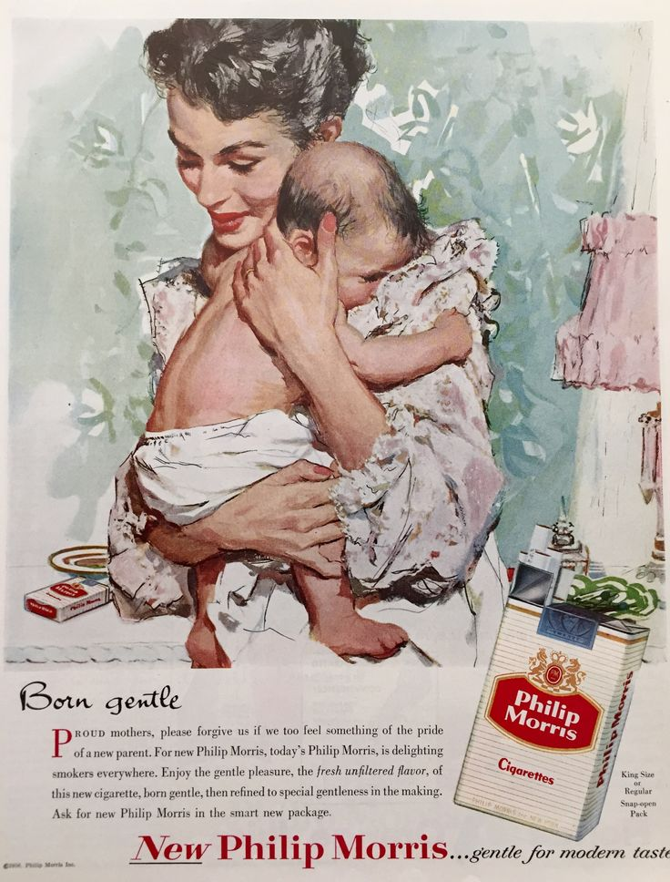

Philip Morris
“Представители табачной компании Philip Morris заявили, что курение вовсе не является экономической проблемой для государства. На примере статистики по Чехии они доказали, что ранняя смерть курильщиков позволяет сэкономить немало средств на лечении стариков и пенсионных выплатах.” (Согласно докладу Philip Morris Чешскому правительству).
Филипп-моррис, — ведущая табачная империя.
Компания включает в себя множество популярных брендов сигарет, включая, например, мальборо. Занимаясь пропагандой курения, создавая «крутые» образы в кино и рекламе, которым хотели бы подражать дети, компания похоронила не одного актера играющего ковбоя Мальборо. А именно четырех.
Три актера умерли от рака легких, четвертый, Эрик Лоусон умер от воспаления легких. Иронично, но большинство «ковбоев Мальборо» в последние годы жизни, раскаивались за свои роли и становились ярыми борцами с курением, судились с корпорацией. Компания неоднократно выплачивала десятки миллионов долларов по искам связанным со скрытием вреда от табачного дыма.
Ради извлечения прибыли компания не чурается миллионами преждевременных смертей, и год за годом, всё искусней обворачивает рекламу своих наркотиков в лживые идеи на любой вкус, цвет и возраст. Курение является одной из ведущих причин смертности людей в мире, поэтому, прежде чем перейти к экологической проблеме, мы обязаны, хотя бы кратко, упомянуть про суть кровавого бизнеса и ложь корпорации Филипп-моррис сопровождающую их бизнес на протяжении всего пути.
Ниже лишь одна из множества аморальных рекламных компаний, навязывающая женщинам курить «нежные сигареты».
Курение вредит не только человеческому здоровью, но и окружающей среде! Окурки загрязняют землю и воду частицами пластика и вредными химическими веществами – и в наше время эта проблема принимает катастрофические масштабы.
По предварительным оценкам исследовательской группы Ocean Conservancy, большую часть мусора в Мировом океане составляют сигаретные фильтры.Окурки — самый часто встречающийся вид мусора. Ежегодно во всем мире выбрасывается около 4,5 триллионов окурков, которые загрязняют 180 триллионов литров воды.
Сигаретные фильтры сделаны из пластика, и к моменту утилизации они содержат тысячи химических веществ, в том числе мышьяк, свинец, медь и никотин. Дождь и роса вымывают эти токсичные вещества, которые затем просачиваются в землю и загрязняют грунтовые воды. Также окурки попадают в океан через дренажные системы и реки.
Проблема заключается не только во вредных веществах, содержащихся в окурках – сами фильтры наносят вред морской жизни, потому что они сделаны из пластика. Огромное количество подводных жителей проглатывают кусочки пластика, который они принимают за пищу. Птицы также принимают окурки за пищу и поглощают пластик и токсины.
Исследователи группы Ocean Conservancy обнаружили следы химических веществ у 70% пойманных ими морских птиц. К тому же более 30 процентов морских черепах и многие виды морской рыбы также забиты токсинами, состав которых совпадает с химическими веществами, используемыми при производстве сигарет.
С увеличением количества мегаполисов и численности людей на планете возрастают выбросы мусора в биоценозы суши и воды Мирового океана. Природный ресурс не безграничен, и он не может переработать чрезмерное количество пластмассы, окурков, токсических веществ. Из-за выбросов травится флора и фауна, разрушаются биоценозы являющиеся основой нашей жизни на планете.
Вина за эти разрушения в первую очередь лежит на производителях подобных Philipp Morris, которым наплевать на медицинскую и экологическую безопасность своего продукта, во вторую очередь на купленных политиках, рекламируют ли они сигареты своим авторитетом или бездействуют в сфере экологического законодательства, выстилая красную дорожку вседозволенности мусорным монстрам.
Обсуждение
Добавьте свои замечания и дополнения к статье в комментарии